离开苏州，第一站去了镇江，为什们呢，因为镇江被誉为躺平圣地，房价低，离南京近，所以想去感受一下，但是实际上只是去景点玩了下，但是路上电动车乱窜，可能是小城市的通病，印象不太好。
停车场痞子momo
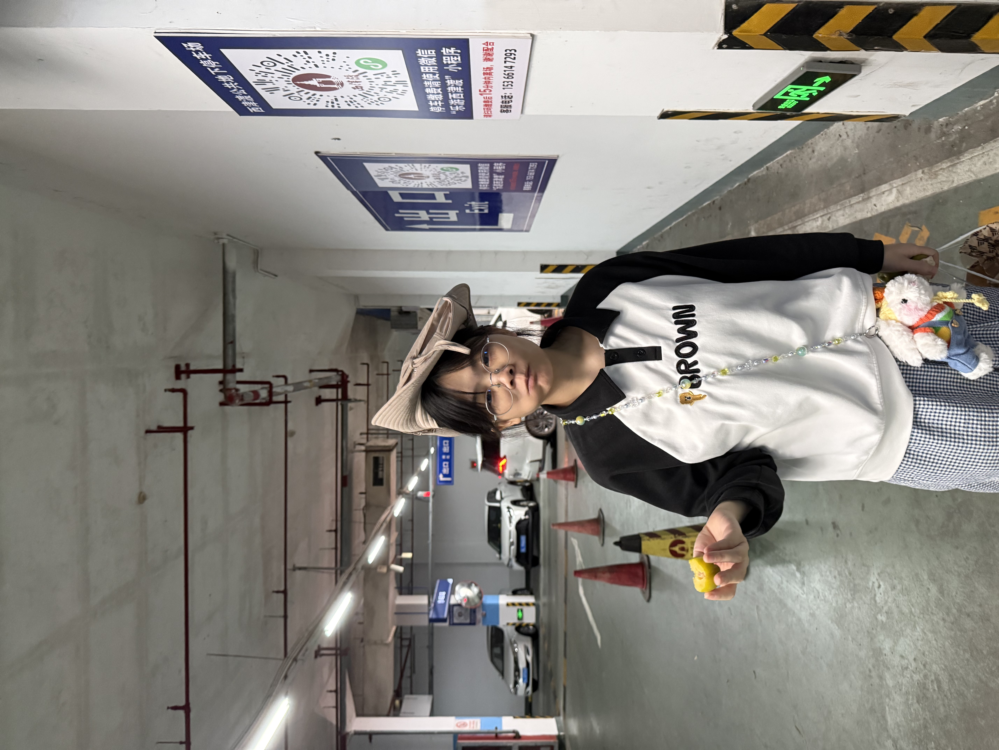
走喽，去西津渡。
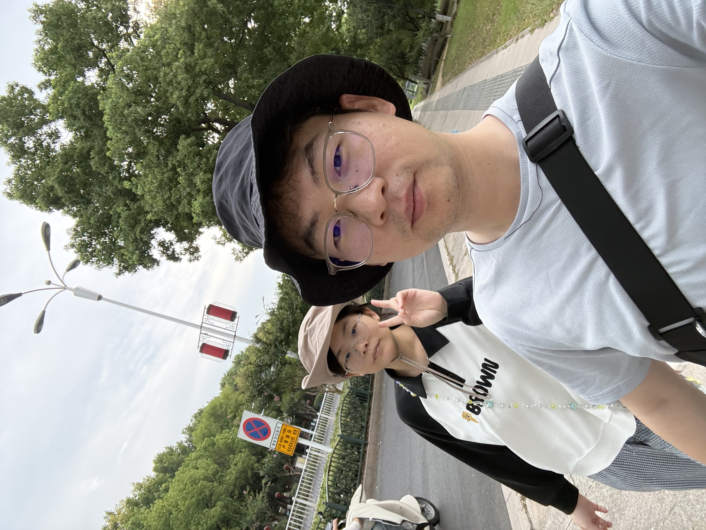
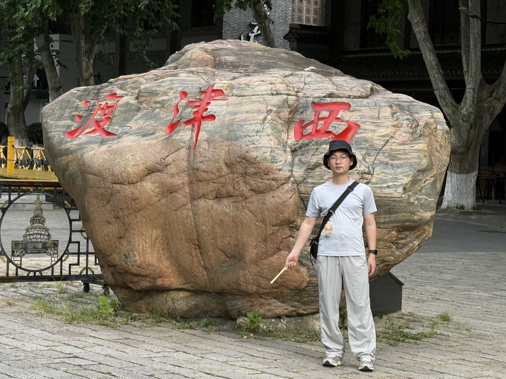
尝一下特色，镇江以香醋闻名，试一下香醋可乐，实际上口感就是加了糖的醋，醋味很难掩盖。
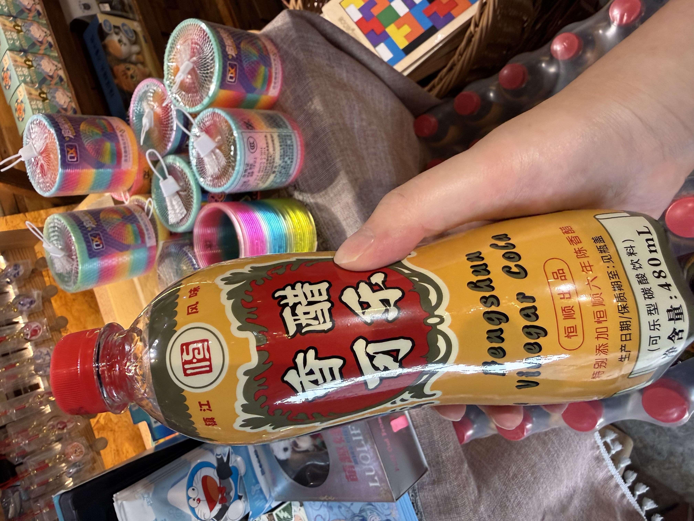
爬上西津渡，俯瞰渡口的风景
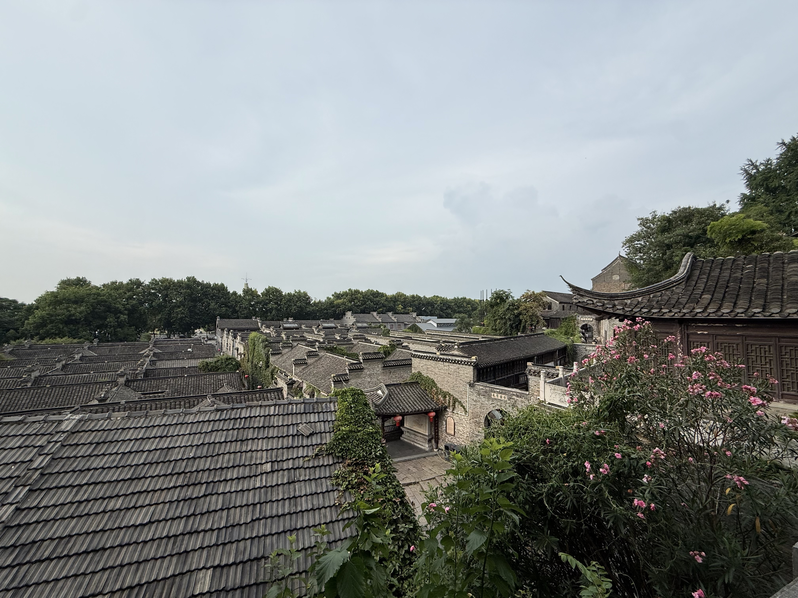
不知道为什么被弄瞎了一只眼的猫猫，对来来往往的人们视而不见，并不想理。
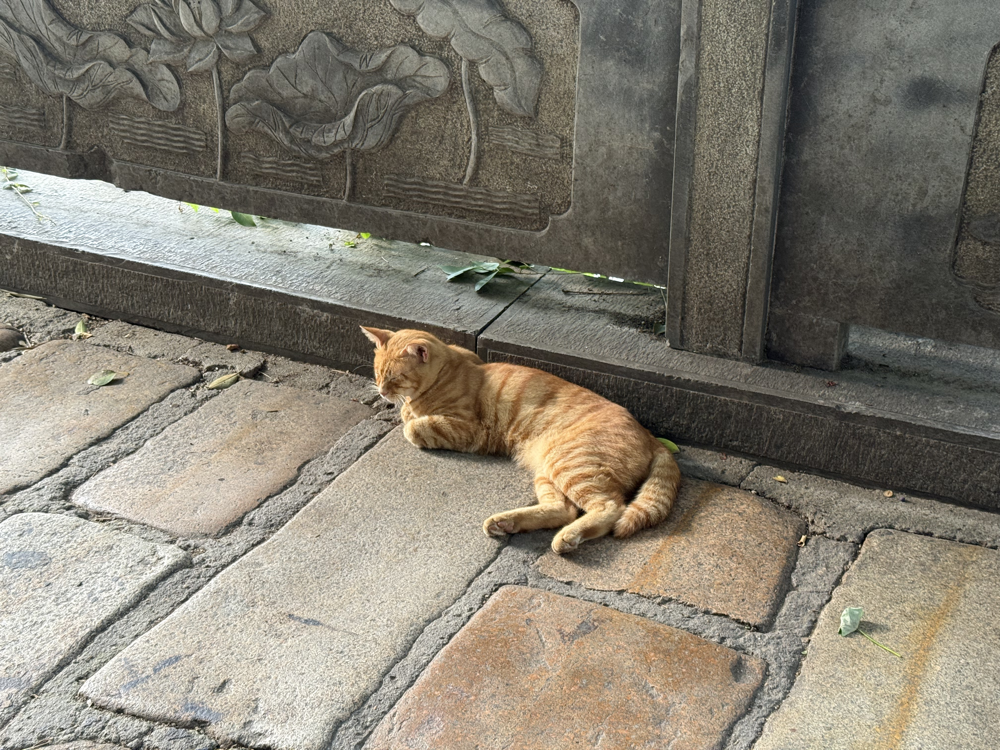
路上遇到的一副标语，很有道理，凡人一生，皆在独行。
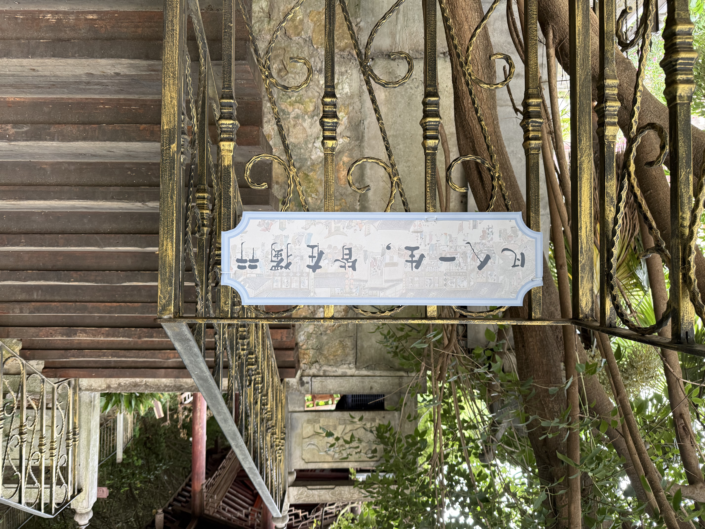
太热了，去防空洞乘凉。
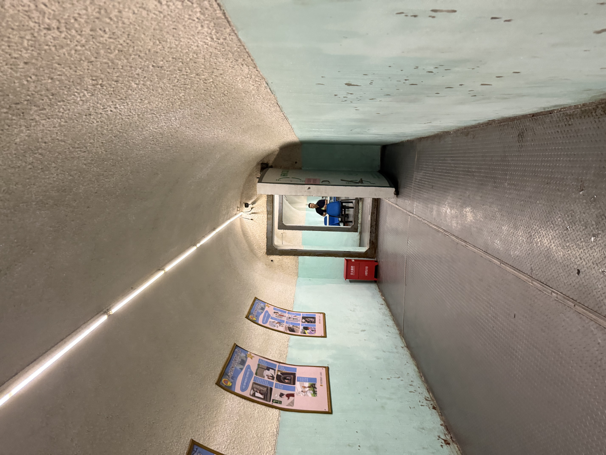
路过地下通道的时候，看到了凡人修仙传的道友，竟然在西津渡有聚会，而且还有广告在这里，666
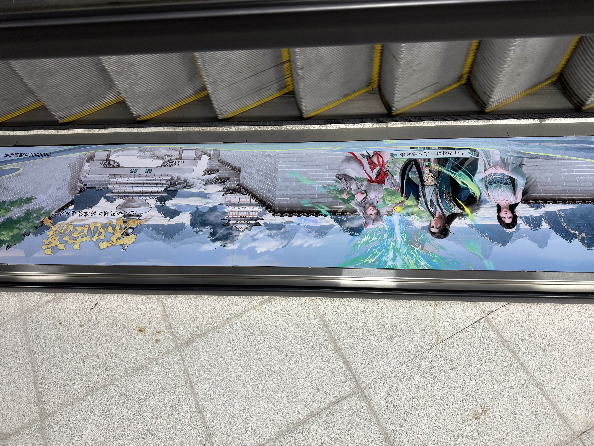
晚上去逛了镇江的永安路夜市，绿豆冰沙、酱饼、韭菜鸡蛋灌饼、冰茉莉豆浆，总的来说还行，炫饱了，休息。
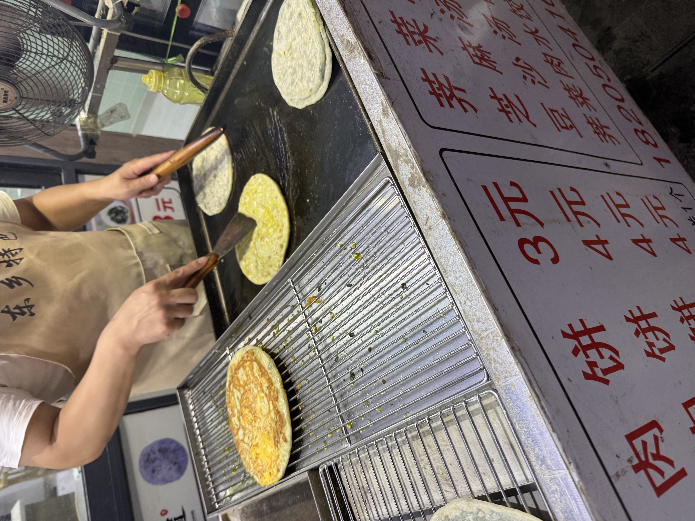
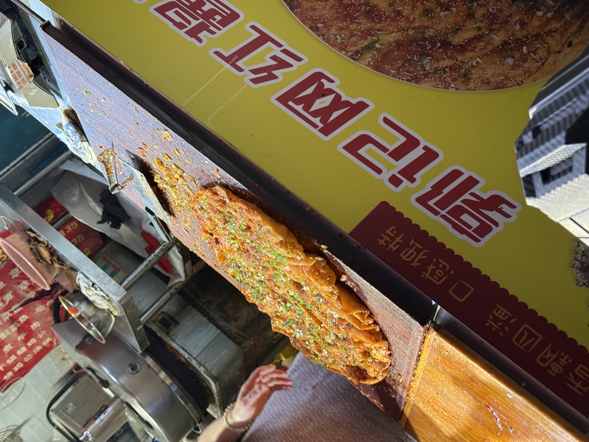
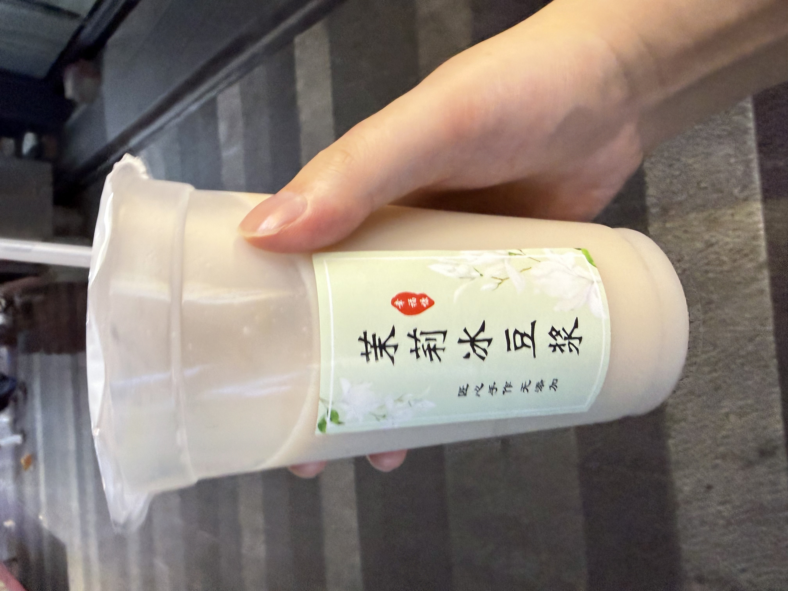